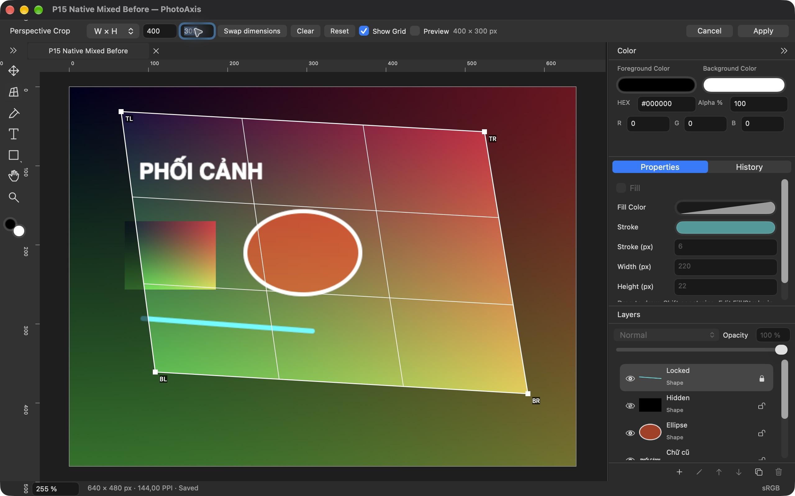
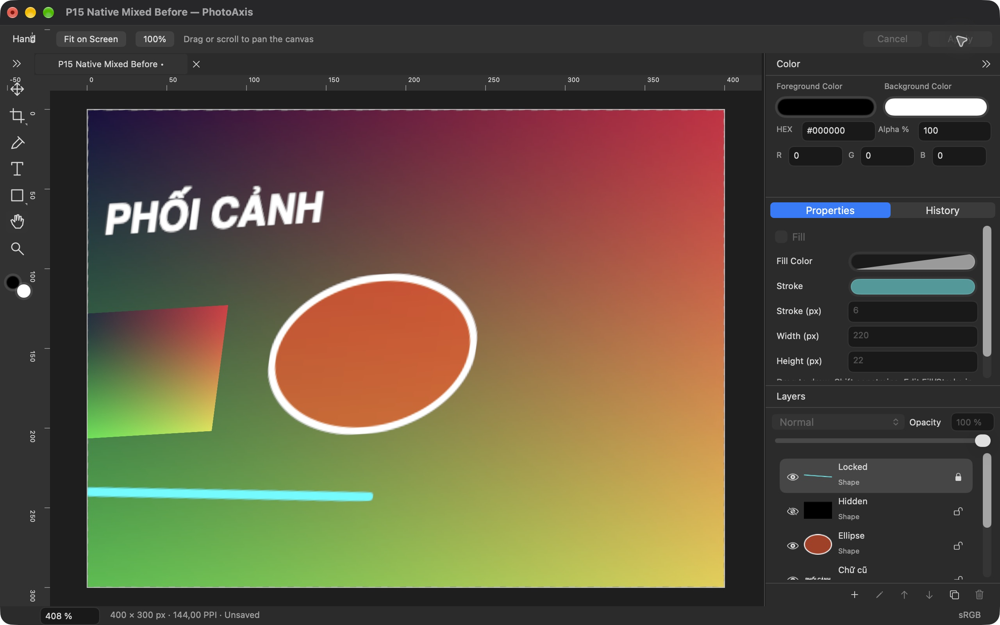
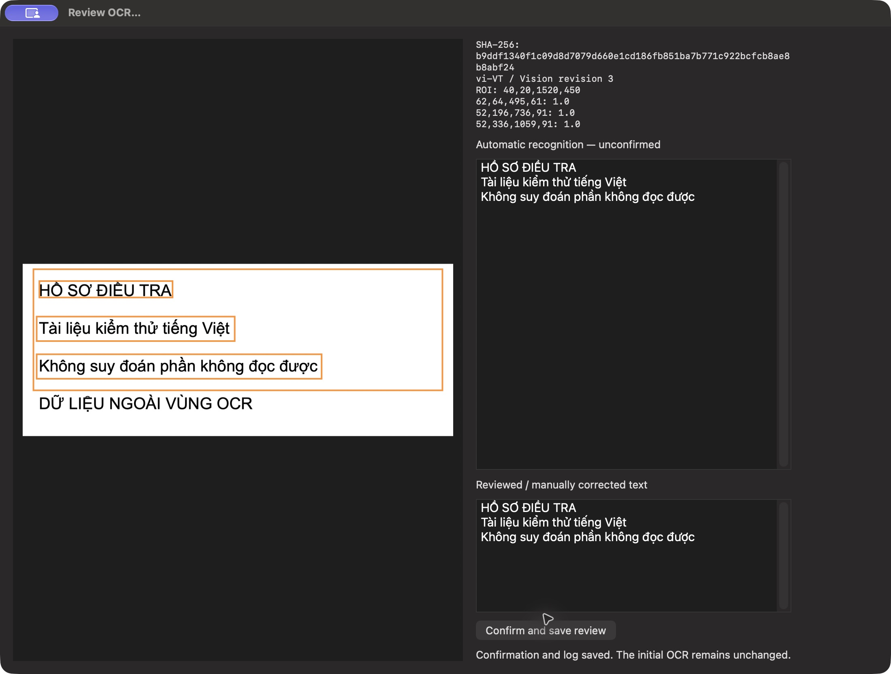
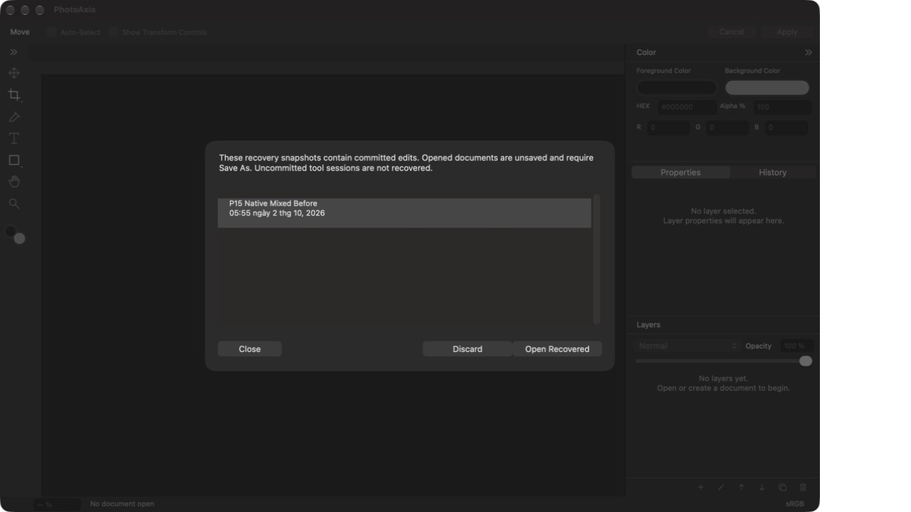

Editable perspective
Apply the same perspective correction to images, text and shapes. Existing layers keep their type; new text uses the corrected canvas.
Native macOS image editor
A native macOS editor for images, text and shapes. Correct perspective across the document, save an editable project, and export PNG or JPEG.
Source is available under GPLv3. Build with Xcode, or wait for the signed installer after acceptance.
.paxis · PNG · JPEG
Editable layers · offline
This is a development preview. Native Perspective Crop, Save/Open, Export and recovery have been exercised. Full acceptance, Vietnamese input methods and target machines remain under verification.
Apply the same perspective correction to images, text and shapes. Existing layers keep their type; new text uses the corrected canvas.
Save layers and embedded sources in one .paxis file. Export the visible result as sRGB PNG or JPEG.
No account, cloud sync, telemetry or external AI service in the app. Your projects stay in the locations you choose.


Captured from the historical baseline build1 Release after the progress display fix. The app is ad-hoc signed for local QA; these captures do not certify a public installer.
Save .paxis to preserve editable layers and embedded sources. Export PNG/JPEG when you need a flattened image to share. Recovery contains completed edits; apply an active tool session before relying on it.
Read the guide →Up to 8000 px per edge, 40 MP canvas/source, 50 layers, 120 MP of unique sources per document and 5 tabs. History is limited to 100 steps/128 MiB per document and is not restored after reopening. No PSD/RAW, brush, masks or AI.
PhotoAxis 1.0.0 · build 5
Sources, Analysis and Output sit beside Edit in the native sidebar. Case intake, annotations, Vietnamese OCR, video frames, calibrated measurements and reviewed exports share the editor. Comparisons and source review use the canvas; pick regions and ordered points directly on the image, then Apply or Cancel. No separate Investigation menu or window.
PhotoAxis 1.0.0 · build 4
Detect page corners and text angle; whiten paper, reduce shadows/noise and use adaptive black and white. Manual two-axis page-bow correction and A4/Letter/custom size. Batch up to 50 images with ordered PNG, editable projects, PDF and a hash manifest. Review every page; real camera/book and maximum-quota qualification is pending.
PhotoAxis 1.0.0 · build 3
Preserve intake bytes and SHA-256 separately from working copies. Review metadata, annotate, compare and export reviewed PNG/A4-PDF copies.
Recognize a selected source region locally, keep human confirmations separate, and extract video frames with source hash, frame index and timestamp.
Measure distance and area using a recorded reference scale, points and geometry assumptions. Results require a suitable image and calibration.


Hashes check integrity; they do not certify origin, authenticity or capture time. OCR, decoded frames and measurements need human review and suitable source data.
